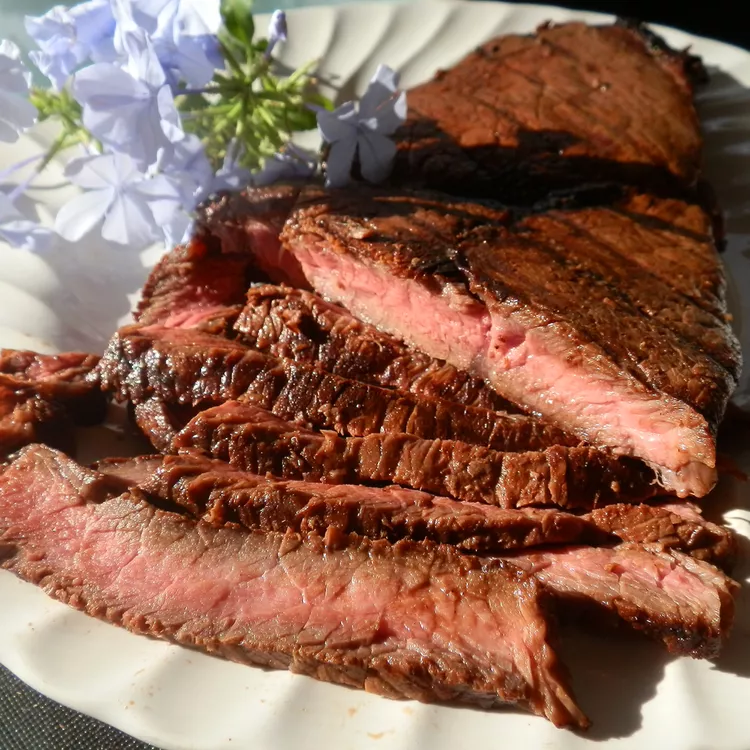

Sirloin Steak with Garlic Butter

This sirloin steak recipe is served with very garlicky butter that makes this steak melt-in-your-mouth wonderful! I have never tasted any other steak that came even close to this recipe. If you are having steak, don't skimp on flavor to save a few calories.
Ingredients
- 1/2 cup butter
- 4 cloves garlic, minced
- 2 teaspoons garlic powder
- 4 pounds beef top sirloin steaks
- salt and pepper to taste
Preparation
- Step One
Preheat an outdoor grill for high heat and lightly oil the grate.
- Step Two
Melt butter in a small saucepan over medium-low heat; stir in minced garlic and garlic powder. Set aside.
- Step Three
Season both sides of each steak with salt and pepper.
- Step Four
Place steaks on preheated grill and cook 4 to 5 minutes per side. An instant-read thermometer inserted into the center should read 140 degrees F (60 degrees C) for medium doneness.
- Step Five
Transfer steaks to warmed plates; brush the tops liberally with garlic butter and allow to rest for 2 to 3 minutes before serving.